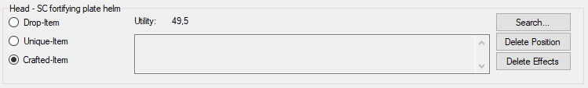
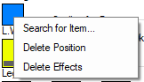

Item - General

Here you will find general information about the current object and its
position.
In the head is the current position, as well as in the case of drop
objects of the name.
On the far left, the basic type of object is set. These include: Drop
item, Unique item and Crafted item. The Crafted
item option does not appear in all positions, as jewelry items can
not be produced by a player.
The middle part consists of 3 elements. The largest of these is a large
text box, which indicates the current configuration. Another element is
the save button. It only appears when left drop
item is selected. This takes over the current item in the item
database.
The last item is the:
Use
The usefulness indicates how useful the item is to the player. It is
calculated as follows:
Benefit = Number value of the bonus * Bonus
multiplier * Weighting (and all bonuses then added)
The bonus multiplier depends on the type of effect:
Status value = 0.666
Resistance = 2
Hit points = 0.25
Manapool = 2
Focus = 0 (Foki have no direct value)
Skills = 5
Caper increases = Corresponds to the underlying value
Other Bonuses = Capwert des Bonuses / 50
Search ...
Call up the search dialog box for the selected position.
Delete position
Deletes the complete item in the selected position.
Delete effects
Deletes all effects of the selected item, but leaves the remaining values
untouched.

 Tip: The last 3 options can also be accessed via the context menu of
the respective position.
Tip: The last 3 options can also be accessed via the context menu of
the respective position.